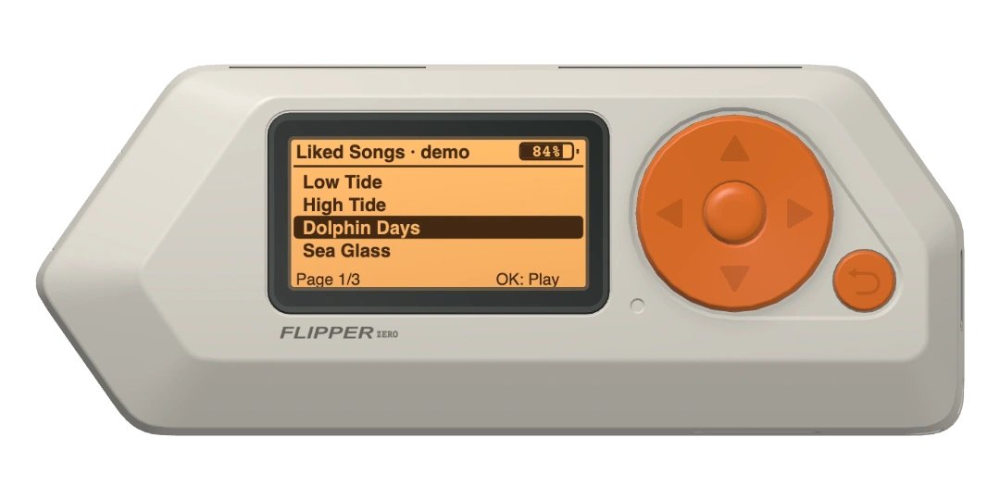

Eddy
Eddy Spotify library.
Anyone can try the sample library of Liked Songs, playlists and albums. Invited testers with Spotify Premium can play their selections on an active Spotify device.
Explore the library

Pick a collection with OK. Use Up / Down to move through its items and Left / Right to turn the page. Press OK to play your selection.
Try the sample libraryYour Spotify library
Enable JavaScript and open this page in Chrome on a Mac, PC or Android phone to link your Flipper.
Open my Liked Songs in Spotify
- Add Spotify in the installer. On the Flipper, open Apps → Spotify.
- Scan the Flipper’s QR code with an Android phone using Chrome, or choose Link Spotify here. Spotify asks for permission in your browser. After approval, choose your Flipper in the Bluetooth prompt and keep this tab open.
- Start Spotify on the device you want to hear. The song, playlist or album you select on the Flipper will play there.
Privacy and account access
Eddy uses Spotify sign-in to read your saved music and playlists and start playback when you press OK. This tab sends library labels to your paired Flipper. It keeps the sign-in tokens in browser session storage and sends requests directly to Spotify.
Choose Unlink Spotify to remove the sign-in from this tab. You can also remove Eddy from your Spotify account’s apps to revoke access.